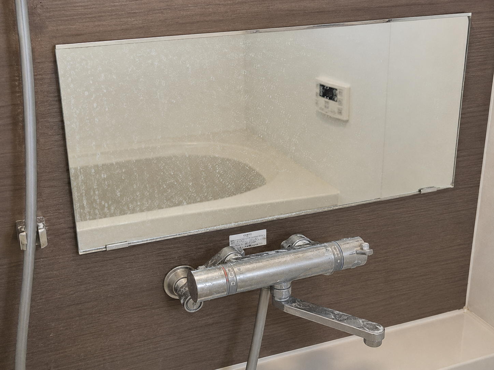
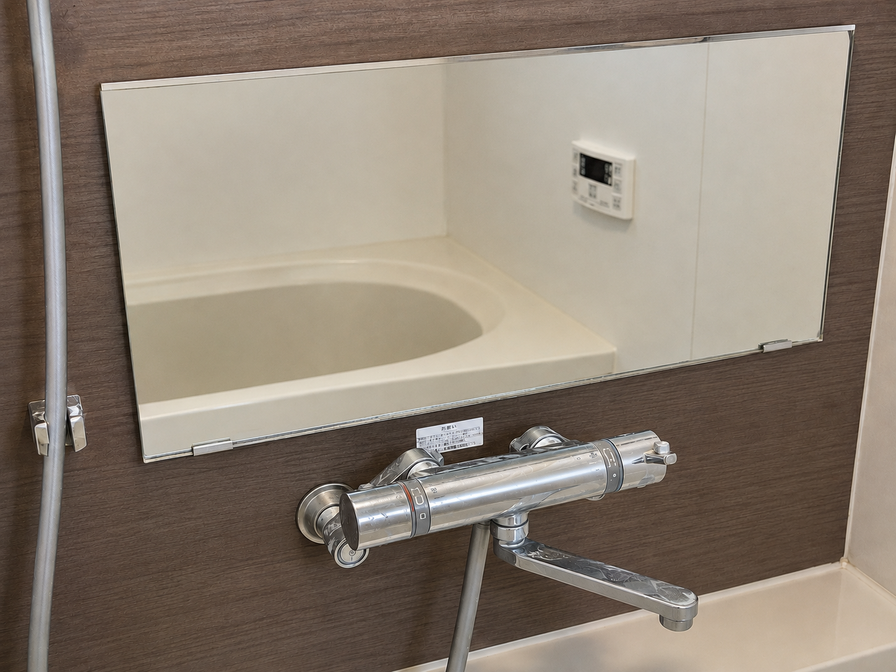
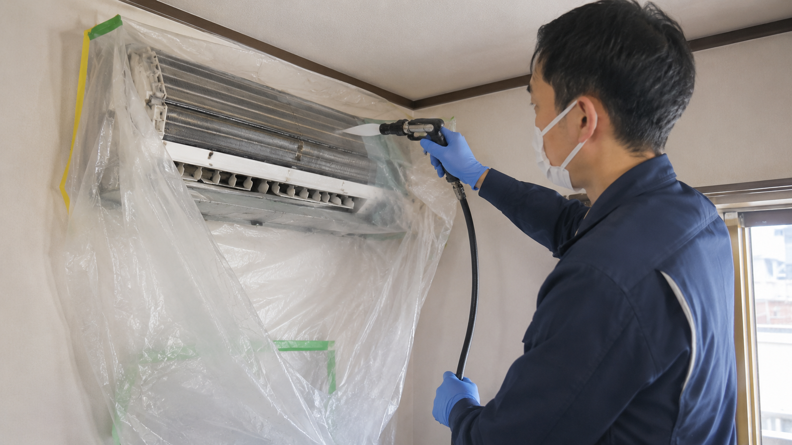
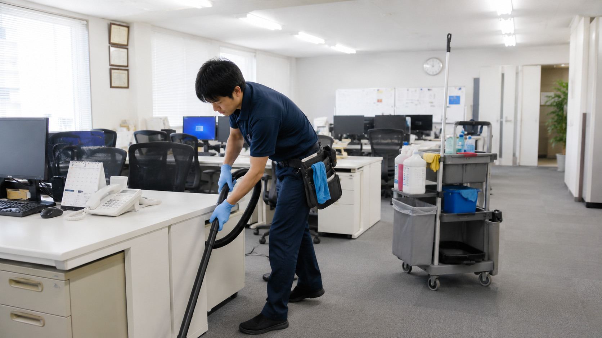
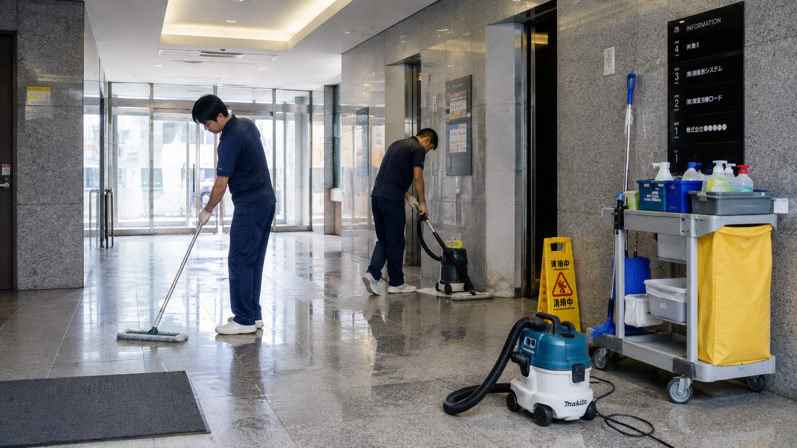
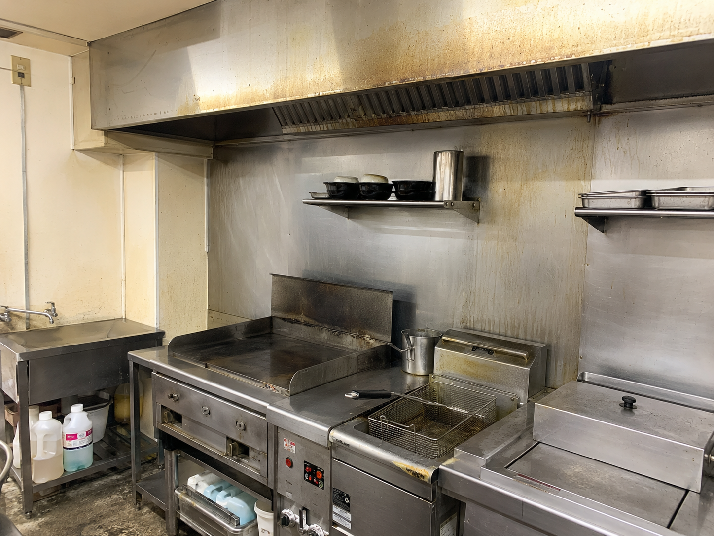
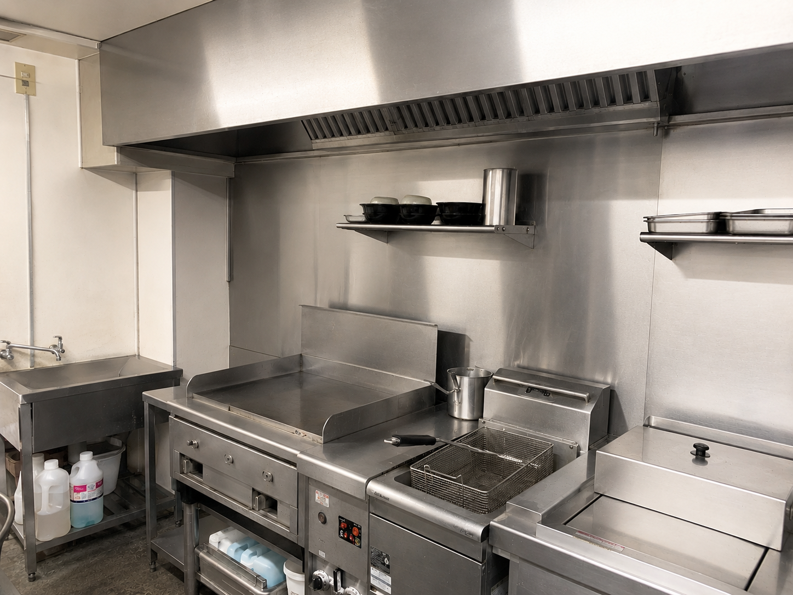

住宅
中央区 M様邸／空室まるごとクリーニング
ご退去後の1LDK。キッチン・浴室・床・窓をまとめて清掃し、次の入居に備えました。
WORKS
住宅・オフィス・店舗での作業事例です。カテゴリのタブで絞り込んでご覧いただけます。
WORKS
住宅・オフィス・店舗の作業事例です。カテゴリのタブで絞り込めます。掲載の写真はすべてサンプル用のプレースホルダーで、内容・場所は例示です。
ご退去後の1LDK。キッチン・浴室・床・窓をまとめて清掃し、次の入居に備えました。


築15年のマンション。浴室のウロコ・赤カビと、洗面・トイレをまとめて依頼いただきました。

リビングのお掃除機能付き1台と寝室の壁掛け2台。においが気になるとのことでご依頼。


約120㎡の執務フロア。金曜の夜間に古いワックスを剝離し、再塗布しました。

事務所エリアの床・什器・給湯室・トイレを1回のスポットでまとめて清掃しました。

執務エリアとフリースペースの拭き上げ・ゴミ回収・トイレ清掃を隔週で継続しています。


鏡まわり・シャンプー台・床の毛髪除去を開店前に実施。定期清掃としてご契約いただきました。


定休日に厨房の床・壁・換気フードまわりの油汚れを洗浄。月1回の定期に移行しました。
絞り込みはJavaScriptで動作します。無効環境ではすべての事例が表示されます。
お電話またはフォームで、作業箇所・ご希望日をお知らせください。現地確認が必要な場合も、お見積もりは無料です。